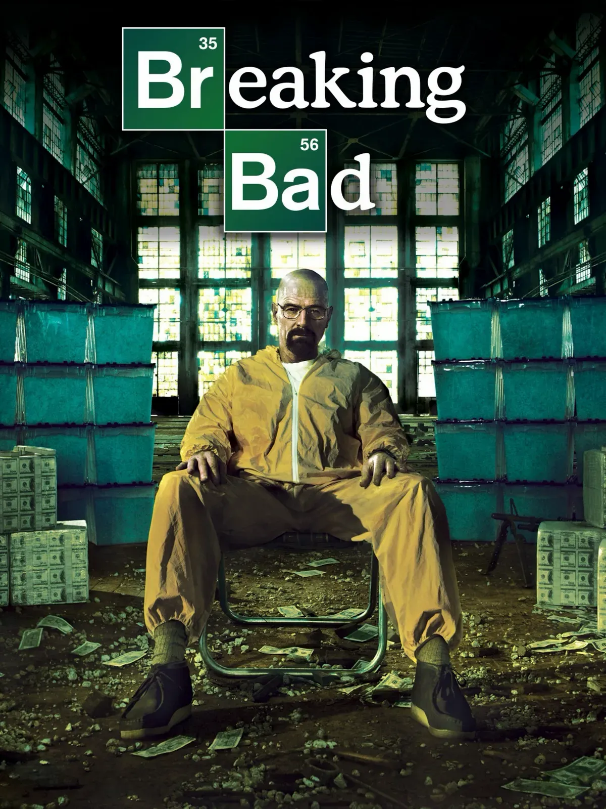

breaking bad
 Language . EnglishWalter White, a chemistry teacher, discovers that he has cancer and decides to get into the meth-making business to repay his medical debts. His priorities begin to change when he partners with Jesse.
Walter White, a chemistry teacher, discovers that he has cancer and decides to get into the meth-making business to repay his medical debts. His priorities begin to change when he partners with Jesse.